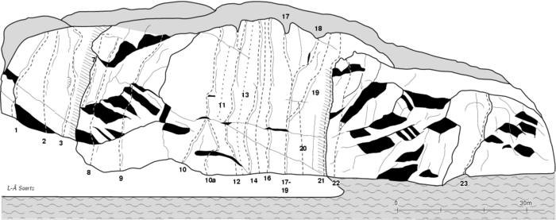

Stora Skramsö
Lat: 58.96130
Long: 18.03960
Allmänt
Stor men tyvärr svårtillgänglig klippa i stockholms skärgård.
Beskrivning
Stora Skramsö är beläget mellan Yxlö och Muskö i Stockholms södra skärgård. Den södra delen av denna avlånga ö är geologiskt sett mycket intressant med sitt branta sydstup och sina tre mycket djupa sprickor, som delar udden i väldiga skivor. Om klippan inte var så svårtillgänglig skulle den vara en av de populärare klipporna i Stockholmsområdet.
Många av lederna är belamrade med mängder av gamla rostiga bultar som inte är att lita på. Lägg egna kilar!
Vägbeskrivning
Stora Skramsö
Till Stora Skramsö tar du dig med båt, eller om du är bra på att simma - ta bilen till Yxlö och simma via Lilla Skramsö.
Leder

Corpus cadens-väggen
- 4
- Lotus
- 7b
- Fin ihållande väggklättring med tunt krux.
Aid led höger om Lotus som ar A4- Varning for langa fall in i kaminen som kan sluta riktigt illa. Forsta sakringen kommer efter 20 meter, upp dit bara hooks och heads samt rurps... Av David Fält
Madonna-väggen
- 5
- Stora läppar
- 5+
- Nytt ankare, renborstad och nya bultar 2012. Fin kaminklättring. Lättare grad om man kryper längre in.
- 6
- Yuppi you
- 7/7+
- Välsäkrad efter att leden 09 fått två nya bultar - en på mitten och en vid insteget. Leden borstades i samband med kompletteringsbultningen.
- 7
- Madonna
- 6
- Kanonfin och varierad klättring. Leden har fått samtliga bultar utbytta samt en ny första bult 09. Nyborstad 2012.
Huvud-väggen
- 15
- Easy go
- 7b
- Med 35 meter välbultad, näst intill vertikal väggklättring, är detta en unik led i Stockholmsområdet.
- 17
- Den gamle och berget
- 6
- Borstad från topp till tå 2012.
- 18
- Lockout
- 6
- Stora delar borstade 2012.
- 20
- På Skramsö finns inga hundpsykologer!!
- 7-
-
Sjöväggen
- 22a
- Jahve
- 6b+
- Fin och varierad väggklättring. Delar de första fem bultarna med ''Jehova'' och går därefter rakt upp och till vänster om taket.
- 22
- Jehova
- 7-
- VARNING!!! De sista tre bultarna är i uruselt skick och taket är MYCKET löst.
- 23
- Bärplockarna
- 4+
- Mycket fin och väl värt det lilla besväret att starta från vattnet (om man har båt). Fina killägen att förtöja båten i.
Blocket
- 24
- En midsommardagsdröm
- 6
-
Kategori:Stockholm
Kategori:Södra Södertörn
Kategori:Stockholms Skärgård
Copyright (C) Permission is granted to copy, distribute and/or modify this document under the terms of the GNU Free Documentation License, Version 1.3